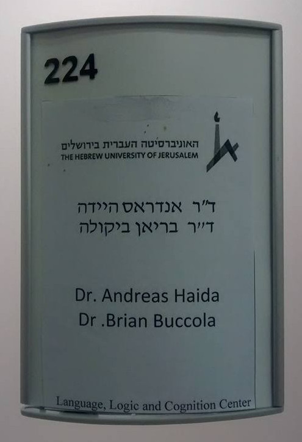

I just opened an Israeli bank account, and my new name is: בריאן אנטוני בוקולה. Woohoo! Here’s what’s going on:
- בריאן (Brian): This would literally be pronounced [ˈbrian] (BREE-ahn), rather than the more normal [ˈbraɪən] (BRY-uhn), since י is pronounced [i] and א usually corresponds to [a]. But this transliteration appears to be quite standard. For example, the Hebrew Wikipedia pages of Brian Eno, Brian May, and Brian Wilson all have בריאן.
- אנטוני (Anthony): This would literally be pronounced [ˈantoˌni] (AHN-toh-nee), rather than [ˈænθəˌni] (AN-thuh-nee), since ט is pronounced [t]. (Hebrew doesn’t have the [θ] sound.) But again, this seems to be quite standard.1
- בוקולה (Buccola): This would literally be pronounced [ˈbukoˌla] (BOO-koh-la),2 which is pretty much how it’s pronounced in Italian, except without the geminated [k]. My family happens to pronounce it [ˌbjuˈkolə] (byoo-KOH-luh), but ever since I lived in Italy, I now go back and forth. [ˈbukoˌla] seems cross-linguistically easier for people to pronounce, since [bj] is quite an uncommon onset cluster.
Funny story: The clerk at the bank actually transliterated my first name slightly differently: as בריין instead of בריאן. That is, א (aleph) became י (yod), giving rise to two י’s (yods) in a row. (At the time, I didn’t notice… I was just signing papers left and right.) Now, י is normally pronounce [i], so at first I thought that people reading בריין would say [ˈbriʔin] (BREE-een), with a glottal stop, but Hebrew actually has a way to indicate a glottal stop, e.g. א, so on second thought that seemed unlikely. In the end, I hypothesized that two yods was the clerk’s way of indicating a non-Hebrew a diphthong, e.g. [aɪ], as in [ˈbraɪən]. This hypothesis was confirmed when, later, a friend told me that בריין is exactly how he would write [breɪn], i.e. transliterate the word brain.
So, no matter where I go, no matter what language or alphabet, my name ends up being misspelled as brain. D’oh!
Bonus: A picture of the name plate on my and my colleague Andreas Haida’s new office. (Ignore the misplaced dot.) Notice that Andreas’s last name, which is pronounced [ˈhaɪdə], has a double yod, so here’s another case where יי = [aɪ]. Notice also that Dr. is ד״ר. The thing between ד (dalet) and ר (resh) is not a double yod or anything. It’s called geryashim—or double geresh—which is a special symbol that indicates an acronym and other short forms.

Actually, there are two Hebrew letters for the sound [t]: ט (tet) and ת (tav). And in fact, Google search for “Anthony in Hebrew” actually yields אנתוני, but so far no one has transcribed my middle name like that.↩
Or [ˈbukula], or [ˈbokola], or [ˈbokula], since ו (vav) can be either [u] or [o], depending on the word.↩